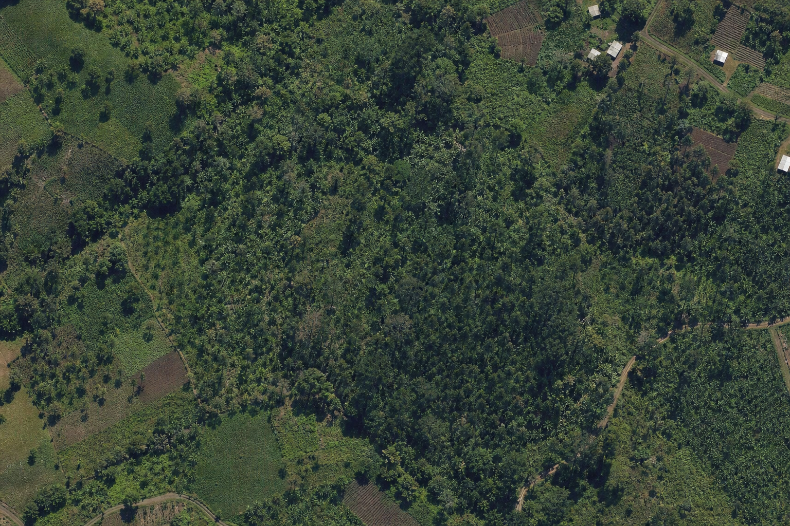
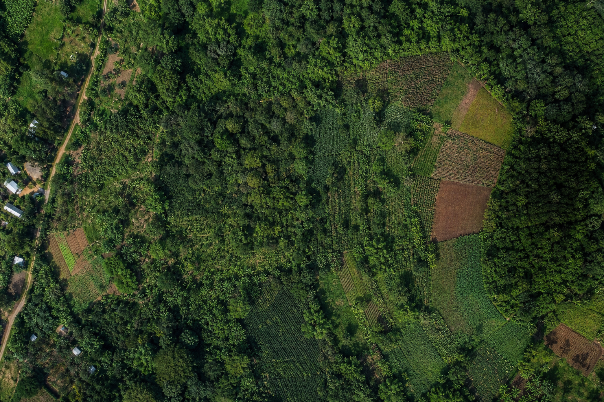

생산자·협동조합
농가·재배지 및 생산정보 관리
키자미테이블 KIJANIFY 서비스 구축
SERVICE OVERVIEW
KIJANIFY는 농가·재배지 정보를 기반으로 현장 조사, GPS, 생산·가공·운송 등 공급망 데이터를 통합 관리하고, 탄소 산정과 EUDR/DDS 대응 업무까지 지원하는 서비스입니다.
커피·코코아 등 농산물의 생산지와 공급망 정보를 지속적으로 관리하고, 농가 단위의 위치·생산·유통 정보를 EUDR 대응에 필요한 데이터로 활용할 수 있는 관리 체계가 필요합니다.
주요 이용 대상
농가·재배지 및 생산정보 관리
공급망 이력 및 원산지 데이터 관리
탄소·DDS 관련 데이터 및 보고서 활용
업무 프로세스
SERVICE ARCHITECTURE
현장 조사
모바일 환경에 최적화된 조사 입력과 오프라인 대응
기존 농가 데이터를 기반으로 조사·공급망·탄소·DDS 데이터를 연결·관리
FUNCTIONAL REQUIREMENTS
기능산정표의 세부 프로세스를 견적 검토가 가능한 상위 업무영역으로 묶었습니다.
DATA AND INTEGRATION
1차 시스템은 등록된 데이터와 발주사가 제공하는 기준을 사용해 업무를 처리합니다. 외부 서비스 연계 방식과 비용은 별도 협의합니다.


필수값, 위치 정확도, 면적 편차 등 정의된 규칙 적용
제공된 활동자료·배출계수·계산정책을 버전별로 적용
사진, 문서, 지리정보 및 비교자료의 등록·조회
지도·위성·규제 시스템·기존 데이터의 연계 방식 협의
※ 본 시스템은 탄소 계산과 DDS 작성 업무를 지원합니다. 공식 인증, 규제기관의 최종 판정 및 외부 시스템 직접 제출 여부는 별도 계약 범위로 구분합니다.
MVP SCOPE
개발사는 아래 범위를 기준으로 견적과 일정을 제안하고, 구현 방식에 따라 영향이 큰 항목을 별도 표시해야 합니다.
DELIVERABLES AND DISCUSSION
화면 구현뿐 아니라 운영 가능한 시스템과 인수인계 자료가 모두 필요합니다.
조사원 모바일 화면, 고객사 사용자 웹, 운영 관리자 웹, 서버 기능과 데이터베이스
화면·기능·데이터·권한·연계 설계서, 설치·배포·백업·복구·운영 매뉴얼
소스코드와 배포본, 테스트 결과, 관리자·조사원 교육, 유지보수 및 하자 대응 계획
① 역할별 상세 권한 ② 화면별 입력항목 ③ 조사 상태와 승인 규칙 ④ GPS·오프라인 요구수준 ⑤ 계산식·배출계수 ⑥ 보고서 양식 ⑦ 데이터 이관·외부연계 ⑧ 보안·운영환경 ⑨ 일정·검수기준
본 문서의 업무 범위를 기준으로 단계별 일정, 인력 구성, 구현 제안, 범위별 견적과 주요 전제조건을 구분하여 제시해 주시기 바랍니다.
화면 구성 참고자료 열기 ↗